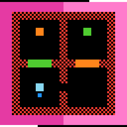

m0r0
Move two mirrored squares at once with the direction keys; landing both on one cell clears the level.
6 levels · 9 rules · all levels replayed in Lean
Replay
The certified run that cleared every level, one action at a time. Beside each step: the rules of the model that explain it; they are also marked in the rule list below.

Explained by
Press Play or step to load the run. Keys, while the player is on screen: ← → step, Space play / pause. A click is circled; cells that changed are outlined.
How it plays
There are two squares of the same colour and the same shape on the field. Each press of a direction key moves both at once: for the up/down keys the two move in the same direction, for the left/right keys the two move in opposite directions, like a mirror; each goes one cell if its landing cell can be entered, and stays in place if blocked. If the two land on the same cell, the level is cleared. The solution is to use walls, doors and marks to block one of them, pull the two together and then bump them into each other. Checkerboard-patterned cells are dangerous cells; stepping into one restarts the level from the beginning. A cell with a small square dot is a mark; it normally blocks the way, and after clicking it, the direction keys push it instead. An isolated coloured cell is a switch: when a block stands on it, the door of the same colour opens, and when it steps off the door closes.

Model
The final model: 8 object types and 9 rules. Each rule is a Python check against every recorded step; 8 of them are translated into Lean (the paper's per-game table). Code under a rule is the file of the same name in the agent's Lean project.
Object types
- Walls
wallsCells that block the way; each level uses one colour per left and right half. - Dangerous cells
hazardsCheckerboard-patterned cells; stepping into one restarts the level from the beginning. - Two squares
piecesTwo squares of the same colour and shape, and the cell each is on. - Marks
markersCells with a small square dot; blocking normally, pushable once selected. - Selected mark
litThe mark selected now, or none. - Switches
switchesIsolated coloured cells; a square standing on one opens the door of its colour. - Doors
gatesDoor cells that are closed now; closed doors block the way. - Counter band
bandThe band along the top and bottom edges; its length grows with this level's steps.
Rules
pieces_moveUp/down move both squares the same way, left/right opposite; each moves one cell if enterable.Python
from __future__ import annotations from derive.predict import predict from rule._common import is_move, level_changed HISTORY = [ … … … … ] def scope_(w, act, nw, ctx): if not is_move(act): … if level_changed(ctx): … if w.lit is not None: … if any(k == "reset" for k, _ in predict(w, act.delta)): … return None def assert_(w, act, nw, ctx): return any(k == "plain" and v == nw.pieces for k, v in predict(w, act.delta))Lean · PiecesMove.lean
import Rule.Response.GateFollowsSwitch namespace Game def inGrid (B : Board) (x : Cell) : Bool := x.r < B.rows && x.c < B.cols def blocked (B : Board) (s : St) (x : Cell) : Bool := !inGrid B x || B.walls.contains x || s.markers.contains x || closedGate B s x def land (B : Board) (s : St) (x : Cell) (d : Dir) : Cell := match x.go d with | none => x | some t => if blocked B s t || B.hazards.contains t then x else t def pieceMove (B : Board) (s : St) (d : Dir) : Pieces := ⟨land B s s.pcs.d d, land B s s.pcs.m d.mirror⟩ end Gamecollide_winsThe level is cleared exactly when both squares land on the same cell.Python
from __future__ import annotations from derive.predict import predict from rule._common import is_move HISTORY = [ … … … … ] NEEDS_NEXT = False def scope_(w, act, nw, ctx): return None def assert_(w, act, nw, ctx): up = ctx["level_prev"] != ctx["level_next"] if not is_move(act): return not up return any((k == "win") == up for k, _ in predict(w, act.delta))Lean · CollideWins.lean
import Obj.World namespace Game def collides (p : Pieces) : Bool := p.d == p.m end Gamehazard_resetsStepping into a dangerous cell restarts the level from its starting layout.Python
from __future__ import annotations from derive.labelings import labelings from derive.passable import HAZARD, kind from derive.predict import predict from rule._common import is_move HISTORY = [ … … … … ] def _hz_targets(w, act): return {t for lab in labelings(w, act.delta) for _, t in lab if kind(w, t) == HAZARD} def scope_(w, act, nw, ctx): if not is_move(act): … if w.lit is not None: … if not any(k == "reset" for k, _ in predict(w, act.delta)): … return None def assert_(w, act, nw, ctx): up = ctx["level_prev"] != ctx["level_next"] for k, v in predict(w, act.delta): if k == "reset" and not up and nw is not None: if not (_hz_targets(w, act) & nw.pieces) and nw.pieces != w.pieces: return True if k == "win" and up: return True if k == "plain" and not up and nw is not None and v == nw.pieces: return True return FalseLean · HazardResets.lean
import Obj.World namespace Game def hazardAt (B : Board) : Option Cell → Bool | some t => B.hazards.contains t | none => false def stepsOnHazard (B : Board) (s : St) (d : Dir) : Bool := hazardAt B (s.pcs.d.go d) || hazardAt B (s.pcs.m.go d.mirror) end Gameclick_selectsClicking a mark selects it; clicking elsewhere selects nothing, and nothing else moves.Python
from __future__ import annotations from dataclasses import replace from rule._common import is_click, level_changed HISTORY = [ … … ] def scope_(w, act, nw, ctx): if not is_click(act): … if level_changed(ctx): … if act.cell is None: … return None def assert_(w, act, nw, ctx): want = act.cell if act.cell in w.markers else None return replace(nw, band=w.band, lit=w.lit) == w and nw.lit == wantLean · ClickSelects.lean
import Obj.World namespace Game def click (s : St) (x : Option Cell) : St := match x with | some c => { s with lit := if s.markers.contains c then some c else none } | none => { s with lit := none } end Gamelit_arrows_push_markerWith a mark selected, direction keys push it one cell, unmirrored; the squares stay.Python
from __future__ import annotations from derive.passable import OPEN, kind from rule._common import is_move, level_changed HISTORY = [ … … ] def dest_of(w, act): tgt = w.lit + act.delta return tgt if kind(w, tgt) == OPEN and tgt not in w.pieces else w.lit def scope_(w, act, nw, ctx): if not is_move(act): … if level_changed(ctx): … if w.lit is None: … return None def assert_(w, act, nw, ctx): dest = dest_of(w, act) return (nw.pieces == w.pieces and nw.lit == dest and nw.markers == (w.markers - {w.lit}) | {dest})Lean · LitArrowsPushMarker.lean
import Rule.Move.PiecesMove namespace Game def markerDest (B : Board) (s : St) (x : Cell) (d : Dir) : Cell := match x.go d with | none => x | some t => if blocked B s t || B.hazards.contains t || s.pcs.covers t then x else t def moveLit (s : St) (x y : Cell) : St := { s with markers := s.markers.map (fun z => if z == x then y else z), lit := some y } def pushMarker (B : Board) (s : St) (d : Dir) : St := match s.lit with | none => s | some x => moveLit s x (markerDest B s x d) end Gamegate_follows_switchA door is open exactly while a square stands on the switch of its colour.Python
from __future__ import annotations from rule._common import level_changed HISTORY = [ … … ] def _tints(w, nw): return {s.tint for s in w.switches | nw.switches} | {g.tint for g in w.gates | nw.gates} def _verdict(w, nw, k): sw = {s.cell for s in w.switches | nw.switches if s.tint == k} door = {g.cell for g in w.gates | nw.gates if g.tint == k} shut_w = {g.cell for g in w.gates if g.tint == k} shut_nw = {g.cell for g in nw.gates if g.tint == k} arrive = bool((nw.pieces - w.pieces) & sw) left = bool({s.cell for s in nw.switches if s.tint == k} & (w.pieces - nw.pieces)) stay_unknown = bool((w.pieces & nw.pieces) - sw) if arrive: return not shut_nw if left: if stay_unknown: return None return bool(shut_nw) and shut_nw == door and not (shut_w & shut_nw) if not door: return None covered = w.pieces | nw.pieces return (shut_w - covered) == (shut_nw - covered) def scope_(w, act, nw, ctx): if level_changed(ctx): … ks = _tints(w, nw) if not ks: … if all(_verdict(w, nw, k) is None for k in ks): … return None def assert_(w, act, nw, ctx): return all(v is not False for v in (_verdict(w, nw, k) for k in _tints(w, nw)))Lean · GateFollowsSwitch.lean
import Obj.World namespace Game def gateOpen (B : Board) (s : St) (k : Nat) : Bool := B.switches.any (fun w => w.tint == k && s.pcs.covers w.cell) def closedGate (B : Board) (s : St) (x : Cell) : Bool := B.gates.any (fun g => g.cell == x && !gateOpen B s g.tint) end Gamewait_noopThe stay-in-place key changes nothing except the counter band.Python
from __future__ import annotations from dataclasses import replace from rule._common import is_wait, level_changed HISTORY = [ … … ] def scope_(w, act, nw, ctx): if not is_wait(act): … if level_changed(ctx): … return None def assert_(w, act, nw, ctx): return replace(nw, band=w.band) == wLean · WaitNoop.lean
import Obj.World namespace Game def wait (s : St) : St := s end Gameband_clockBand length is this level's step count, scaled and rounded; a new level resets it.Python
from __future__ import annotations from rule._common import level_changed HISTORY = [ … … … ] NEEDS_NEXT = False def band_of(m: int) -> int: return (64 * m + 75) // 150 def scope_(w, act, nw, ctx): return None def assert_(w, act, nw, ctx): if w.band != band_of(ctx["m"]): return False if nw is None: return True if level_changed(ctx): return nw.band == band_of(0) return nw.band == band_of(ctx["m"] + 1)Lean · BandClock.lean
import Obj.World namespace Game def band (m : Tick) : Band := (64 * m + 75) / 150 def tick (s : St) : St := { s with tick := s.tick + 1 } end Gameterrain_staticWithin a level, walls and dangerous cells never change, and the number of marks stays.Python onlyPython
from __future__ import annotations from rule._common import level_changed HISTORY = [ … … … … ] def scope_(w, act, nw, ctx): if level_changed(ctx): … return None def assert_(w, act, nw, ctx): return w.walls == nw.walls and w.hazards == nw.hazards and len(w.markers) == len(nw.markers)
Code is shown with comments and the agent's notes removed; the files as written are in the archive under Check it yourself.
Proof
For every level, Lean starts from the level's first screen, applies the model's rules to the certified actions, and checks that every computed state agrees with the recorded frame on the components the model represents, and that the last one wins. Each theorem is closed by the Lean kernel and is a statement about the learned model.
Every level can be won
theorem L0_winnable : Winnable L0_board L0_start := …theorem L1_winnable : Winnable L1_board L1_start := …theorem L2_winnable : Winnable L2_board L2_start := …theorem L3_winnable : Winnable L3_board L3_start := …theorem L4_winnable : Winnable L4_board L4_start := …theorem L5_winnable : Winnable L5_board L5_start := …theorem scene_open_winnable : Winnable opened start := …What cannot be won under the model
theorem key_no_win (B : Board) (kb : KeyBoard B) : ∀ s a, Key B s → step B s a ≠ Res.won := …theorem unsolvable_by_mirror_key (B : Board) (kb : KeyBoard B) (s : St) (h : Key B s) : Unsolvable B s := …theorem scene_stuck_unsolvable : Unsolvable stuck start := …theorem scene_open_not_unsolvable : ¬ Unsolvable opened start := …Statements only; the proofs and the full Lean project are in the archive, with the steps to re-run them, under Check it yourself.
Check it yourself
Everything on this page comes from files you can download and check. The archive holds the agent's files: the recorded run, the concept book, the concept sources, the Lean project and the sealed model file, plus the record of our kernel check.
Download m0r0.zip 0.4 MB · 64 files
Re-run the proof
Before you start: our run of this check took 45 s and 1.7 GB of memory at its peak (2026-10-24).
- Download m0r0.zip and unpack it. The model and its theorems are in
archive/m0r0-20260910/formal/Game.lean. Before changing it, check that its SHA-256 is3fccb87cba48feed7f403050706995d3ba430abb04b8c1ce238bb632265a17fc - Install Lean with elan, then the version named in the archive's
lean-toolchain:elan toolchain install leanprover/lean4:v4.34.0 - Copy the model file to
Check.leanand append these two lines to the copy:#print axioms consistent #print axioms faithful - In the folder that holds
Check.lean, run:lean +leanprover/lean4:v4.34.0 -M60000 Check.lean - Lean should finish without errors and print:
The first line is printed by the file itself: for each rule, how many recorded transitions meet its condition.GUARD_HITS two_pieces_50=475,action5_noop=4,hud_monotone=475,click_selects=60,dim_iff_highlight=301,frozen_when_selected=92,push_door=92,move_delta=317,move_iff_clear=305,dest_set=305,collide_wins=317,hazard_resets=2,identity_needs_one_move=151,parity_flips_iff_blocked=100,land_on_floor_only=475,mirror_pair_persists=8,terrain_static=475,switch_opens_gate=52,gate_closes_on_leave=12,gate_stays_open=165,piece_survives_on_gate=12 'consistent' depends on axioms: [propext] 'faithful' depends on axioms: [propext]
What a pass establishes
consistent: for every recorded transition, as read by the agent's parser and with duplicates removed, every rule whose condition holds also has its effect hold. faithful: the certified run, recomputed step by step from the first screen of each level, matches the record and ends in a win. Axioms used: propext, all among Lean's standard ones.
What it does not establish: that the parser reads the screens correctly (that step runs in Python, outside Lean), or that a rule whose condition never occurs in the record is right. The Python file that produced the readings inside the model file is in the archive at meta/repair-20260928/lib/m0r0-20260910/_lib.py.